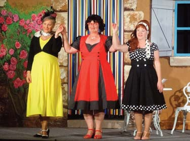
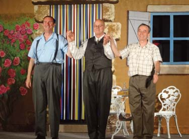

18 Associations ( ( ( 7 belles représentations de Théâtre tout public à Montpezat de Quercy en 2026. Des Jeunes ou Moins Jeunes assis côte à côte pour Rire ou Sourire Ensemble, voilà la vraie réussite col- lective pour la joyeuse troupe de Montpezat Comédie. Eternel dé� de sélectionner une nou- velle pièce/thèmes de théâtre chaque année. En 1968, Mrs J.J. BRICAIRE & M. LAS- SAYGUES détaillent comment croiser ses deux « Veuves » avec sa toute der- nière « Fiancée » dans Le Grand Zèbre. Les acteurs amateurs de Montpezat Comédie ont « gongué » les �dèles spectateurs. La Comédie est une mécanique d’Horlogerie. Les mécanismes qui amènent le Rire ne peuvent pas être Faux : le Public ne rit que s’il a envie de Rire. Quel plaisir en découvrant le sublime décor en Trompe l’Œil réalisé par Sylvie D. Quelle �erté d’aborder tous les sujets sans retenus dans un spectacle vivant local. Bravo à Lydia pour les superbes costumes sur-mesure des années 50 des Messieurs. Joëlle a photographié son Bonhomme pour toucher l’Assu- rance après la Noyade ! Michel a plongé dans le Lemboulas car 3 Femmes c’était trop pour un Seul Homme. Luc a improvisé pour éviter les Balles en prescrivant une crise d’Amnésie subite ! Daniel a sauvé la vie de son Client Préféré pour obtenir de Petites Compensations ! Martine W a récupéré son Animal perdu mais ne se laissera plus ja- mais Klaxonner. Marie s’est évanouie devant un fantôme avant de lui facturer les intérêts de retards ! Quelle réussite grâce à une éner- gie bienveillante et un merveil- leux public attentif.On ne se prend jamais au sérieux mais on essaie juste de jouer sérieuse- ment. Que la jeunesse locale nous contacte pour monter sur les planches à nos côtés ! Ensemble, on fait des miracles mais on ne peut pas agrandir les murs du théâtre. Avec +95% de taux de remplissage �nal, chacun pouvait trouver une place libre ! Réservez tôt et venez très nombreux nous soutenir dès les toutes premières dates. Merci à nos complices (Babeth, Edith, Jean Luc, Michelle, Paul, Régine, Sarah, …) qui en coulisse assurent avec bonne humeur comme toujours un accueil parfait. L.60, D.70 ou J.L.80 ans mais toujours aussi dingues sur scènes…et tant mieux ! Théâtralement Votre Pour le Meilleur et pour le Rire Pour le Meilleur et pour le Rire L’association FeelinGood propose des cours de Pilates , de Yoga Slow ( yoga tout doux , pour se toni�er et s’étirer en douceur ) et de Beeyola ( mélange dynamique du pilates et du yoga ) Des cours de danse moderne sont également proposés sous forme d’atelier choré- graphique pour les enfants de la maternelle au collège . Du lundi au mercredi , venez nous rejoindre dans une belle ambiance où le respect et la bonne humeur sont présents toute l’année ! Renseignements et inscriptions au 07 44 41 35 05 / atelierfeelingood@gmail.com Valentine GUELPA : 07 44 41 35 05 FeelinGood